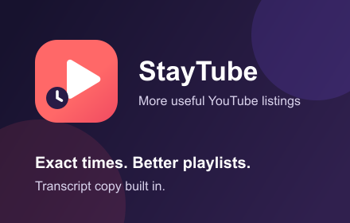

Published runtime unchanged: the current source matches published 1.0.5. The screenshots and listing tools are available below; this source-only update does not require another extension upload.
85 automated source/helper tests passed. The screenshot run checked the restored watch layout, publication timestamps, and transcript control on live YouTube. Complete the remaining behavior checks before submitting. The public GitHub repository provides the homepage, support, and privacy-policy URLs below.
1. Gather the files
Links below open the prepared files. Keep this guide in the repository so its local links work.
| Dashboard upload | File | Status |
|---|---|---|
| Extension package | staytube-1.0.5-chrome-web-store.zip | Build before use · no new runtime publication needed |
| Store icon | icon-128.png | Ready · 128×128 PNG |
| Screenshots | Preview and download the three screenshots | Ready · three 1280×800 PNGs |
| Small promotional image | small-promo.png  | Ready · 440×280 · optional, recommended |
| Marquee promotional image | marquee-promo.png | Ready · 1400×560 · optional |
| Privacy policy | Public privacy policy · HTML copy | Ready · hosted in the public repository |


ZIP file path
On a Mac upload dialog, press Command–Shift–G, paste this path, then select the file.
Screenshots
The initial included images were captured from StayTube 1.0.4 on live YouTube in a signed-out, disposable Chrome profile. Retaking replaces the preview PNGs and current download bundle using the active source version; the original versioned bundle remains preserved. Upload these PNGs directly to the Store listing tab, with the watch layout first.
Download all three screenshots (ZIP). Extract the archive and upload the PNGs.


Retake the screenshots
Double-click Capture Store Screenshots.command in Finder, or run node scripts/capture-store-screenshots.cjs from the project folder. It uses the installed Codex Playwright runtime and Chrome Extension Test Runner skill, checks StayTube's live controls, saves fresh PNGs, and closes its disposable Chrome profile. If the agent workspace denies process checks, host execution is required.
Live test and screenshot checklist
- In Chrome, open
chrome://extensions, turn on Developer mode, choose Load unpacked, and select/Users/kyle/Documents/StayTube. Reload YouTube tabs. - Check the description, date, and comments below the player. Expand the description, load more comments, navigate to another video, and use Back/Forward. Check normal, theater, and full-screen modes.
- Check a search result and a playlist row, then scroll to load more. Confirm new rows receive dates and controls. Test Watch Later and playlist removal while signed in.
- Copy a captioned transcript and paste it into a text editor. Check timestamps and chapters. Check dark mode and a narrow window.
- Capture the actual restored watch page, a listing with publication dates, and playlist tools. Use square corners with no added padding. Exclude private playlist names, account details, and unrelated browser UI. Save PNGs at 1280×800 or 640×400.
The images in store-assets/mockups are design references. Do not upload them as real screenshots. Full release checks are in RELEASE.md.
2. Use the existing extension item
- Open the Chrome Web Store Developer Dashboard.
- Open the existing StayTube item, ID
dendmbjihbflekjlbfofggaiipplagap(public listing). Do not create a duplicate listing. - The verified published runtime is 1.0.5. This source-only landing has no new runtime changes to upload. For a later meaningful update, build the normal store ZIP and verify its version exceeds both the published version and all private uploaded drafts.
- Keep the authoritative public listing URL and item ID in future release handoffs. Listing screenshots can be reviewed separately from a new runtime package.
If StayTube already has a store item
Open that existing item and upload the ZIP using its Package tab. Do not create a duplicate listing. The uploaded version must be higher than the version already in that item.
3. Fill in Store listing
Use English (United States), Productivity, and the default public distribution.
Name from manifest
Summary from manifest · 132 characters max
Detailed description
Category
Language
Open GitHub Issues for support and bug reports. Issues are enabled.
Upload the listing images
Upload the icon and at least one real screenshot from step 1. Put the restored watch page first. Add the small promo image if desired; marquee and promotional video are optional. Save the Store listing tab.
4. Fill in Privacy practices
These answers intentionally disclose local processing of YouTube content and URLs.
Single purpose description
clipboardWrite justification
Host access justification YouTube content-script access
If the dashboard asks separately for each YouTube match, use this explanation for both. No other site access, clipboard reading, or browsing-history API permission is requested.
Remote code justification
Data disclosures select these checkboxes
Data use certification check every certification
Paste this URL into the dashboard. Open the public privacy policy. It is readable without signing in; separate website hosting is not needed.
Keep PRIVACY.md on the repository's main branch synchronized with the extension's behavior. The HTML copy and policy text below contain the same policy.
Privacy policy text
Save the Privacy practices tab. Local-only processing still requires disclosure. The answers above describe the current extension; keep them accurate if its behavior changes.
5. Set Distribution and Test instructions
Distribution choices
These are suggested settings for a free public launch. Confirm the selected regions match where you want to distribute it, then save.
Reviewer notes / test instructions
Paste this into the Test instructions tab if available. No extension login or special test credentials are needed. Do not include your personal Google password.
6. Submit for review
0 checks completed
- Choose Submit for Review once the required dashboard fields are complete.
- In the confirmation dialog, keep automatic publishing selected if you want StayTube to go live after approval. Clear that option if you want to publish manually after approval.
- Confirm submission. Monitor the item's status and developer email for review questions. If approved with deferred publishing, return to the dashboard and publish it within the displayed deadline.
- After it is public, install from the actual store listing in a separate Chrome profile and test one watch page and one dynamically loaded listing. Confirm the public support and policy links work.
If the dashboard blocks submission
Open the indicated tab, fix the missing field, and save. Common missing items are a real screenshot, a reachable privacy-policy URL, an unanswered permission justification, or a data-use certification. For a rejected review, address the specific reason in Google's email and resubmit; do not create another store item.
Official references
Upload and submit an extension · Store listing fields · Image sizes · Privacy fields · Local data disclosure